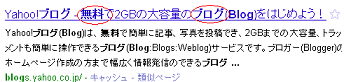

ブログタイトルの作り方とSEO対策
アカウントを取得したら、ブログのタイトルを決めましょう。
ブログのタイトルの作り方ですが、まず「サイトのテーマ」を決め、そのテーマに関連するキーワードを盛り込む形で作るのがベターです。
一般的な作り方としては、ブログタイトルに「検索でヒットして欲しいキーワード」を盛り込み、そのキーワードを左側の最初の方にもってくるようにします。
例えば、「無料ブログ」で検索した際、グーグル検索ではこのような結果が表示されています。
このなかで、FC2やジュゲムは「無料ブログ」のキーワードが左側に出ていますので、検索した際にもヒットしやすいようです。
一方、ヤフーブログのように、キーワードの間隔が空いていたりすると、たとえ有名なサイトでも、２ページ目ぐらいに表示されてしまうかもしれません。

さまざまなキーワードをタイトルに入れることにより、いろんなキーワードでヒットする確率も高くなりますが、その分、効果の方も薄まってしまいます。
なるべく、短めのタイトルで、検索でヒットして欲しいキーワードを絞り込んで、最初の方に持ってきながら作成するようにしましょう。
SEO対策をするとブログのアクセスが増える
ブログのアクセスを多くするには、検索エンジンで上位に表示されるような作り方をするのが効果的ですが、そのような対策はＳＥＯ対策とよばれています。
3位よりも2位、2位よりも1位の方がクリックされる確率が高いので、上位に表示されればされるほどアクセス数が多くなるのです。
例えば、上の「無料ブログ」でのキーワードの場合、月間で74,000回程度の検索回数があります。
仮に、1位のクリック率を5割程度とすると、このキーワードで上位に表示された場合、月間で37,000程度のアクセスが見込めることになります。
このSEO対策のほとんどはあとから修正の効くものが多いですが、ブログのタイトルだけは変更しにくいので、最初のタイトル選びは大切です。
例えば、月に1，2回しか検索されないキーワードでタイトルを作成してしまうと、まったくアクセスがなくて、ブログを更新するのがつまらなくなってしまうケースが多いです。
できるだけ検索回数の多いキーワードを選んで、そのキーワードをブログタイトルに含めるような作り方がおすすめです。
また、テーマによっても、アクセス数に大きな違いが出てきます。
私のブログを例にすると、芸能系をテーマにしたブログでは、すでに 100万PV を突破しているのもありますが、ほぼ同じ時期に作成した健康系のブログではやっと 8万PV 達成なるかという程度です。
芸能系
健康系
けれども、ブログ広告による収入の面では、健康系の方がはるかに収益が発生しやすいです。
当ブログのようなウェブ系サイトの場合、この中間のような感じですが、選択するブログのテーマやカテゴリーによって、アクセス数やアフィリエイト収益の効率もかなり大きく違ってきます。
最初に選択するテーマやカテゴリーによって、のちのち大きな差が出てきますので、最初のブログタイトル選びはじっくり決めた方がよいでしょう。
戻る - ブログの作り方の簡単手順
- ブログタイトルの作り方
ブログタイトルはＨＴＭＬ上ではタイトルタグで囲まれた部分が表示されることになります。タイトルタグは<title>なタグでたいてい、ＨＴＭＬの最初の方に出てくることになります... - 無料ブログのメタタグ重複問題
無料ブログで何かと気になるのはメタタグの重複エラー問題なのではないかなと思います。わたしも最近はメタタグの重複をどうすればいいのか困っています。 無料ブログのシーサーブログの場合 無料ブログのなか...